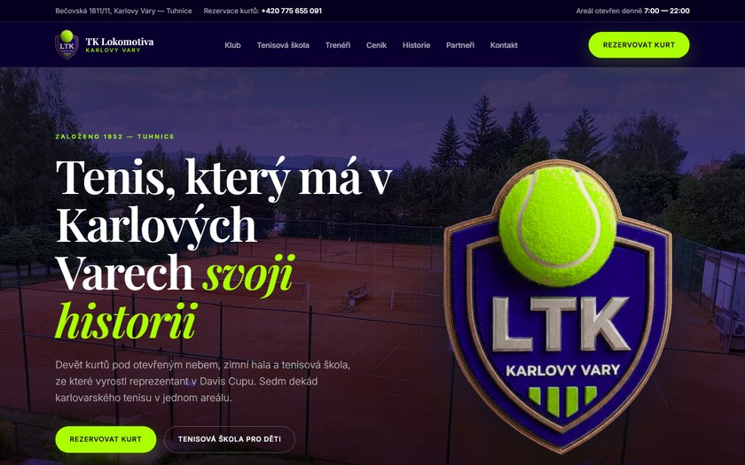

Návrh 1

Indigová noc
Tmavý · prémiový · výrazný
Klubový znak ve velkém na fotce areálu pod tmavým závojem. Elegantní patkové písmo, limetkové akcenty, prosklené karty. Ze všech tří je nejvýraznější a nejlépe funguje na velkých obrazovkách.
- znak jako hlavní motiv úvodní stránky
- historie klubu jako časová osa
- vhodné, pokud má web působit sebevědomě